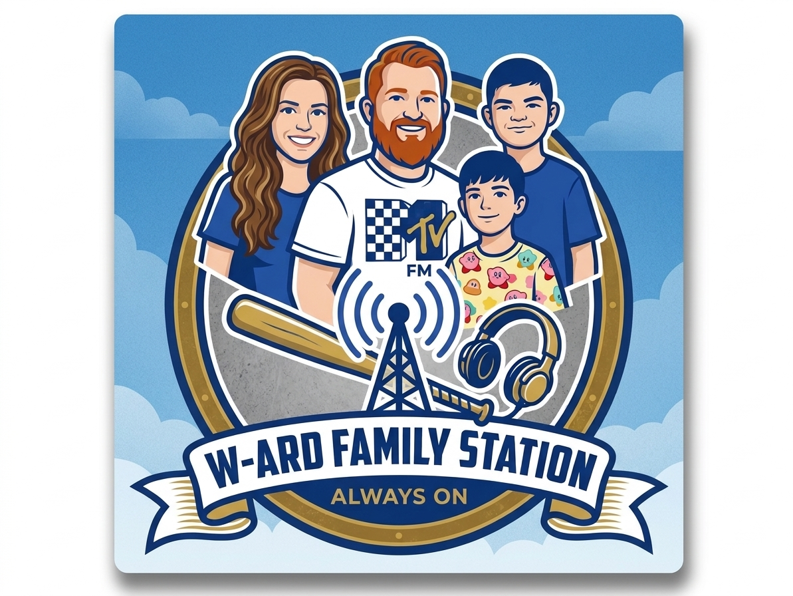

Broadcasting Live 24/7

W-ARD Station
W-ARD Radio Station
24/7 Always On Radio Stream
80%
FastCast4u Server
Share Stream
Your browser does not support the audio element.
Stream URL copied to clipboard!